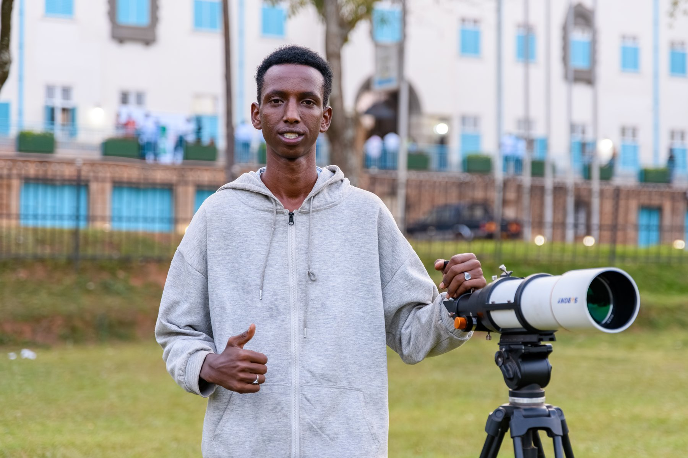

Makerere University · Uganda
Aerospace &
electronic systems.
At Makerere.
Meet the Makerere University IEEE AESS Student Branch Chapter — students learning, sharing ideas and exploring engineering together.
Meet the chapter ↗
Our chapter
People, ideas
and shared interests.
We are the Makerere University IEEE Aerospace and Electronic Systems Society Student Branch Chapter, under the Uganda Section.
Our chapter was approved on 12 September 2026. We welcome students interested in aerospace, electronics, sensing and navigation.
About IEEE AESS ↗Learning together
Photo collection ↗From the workbench
Drone systemsDrone design
& electronics.
A frame simulation and a short demonstration from the workbench.
Watch the 21-second demonstration
Membership / collaboration / enquiries
Contact the chapter.
zooraharrison3@gmail.com ↗Harrison Zoora · Chapter Chair